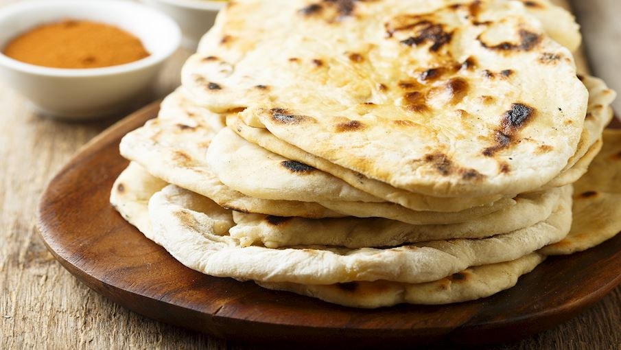

- Briefly stir together the warm water and honey in the bowl of a stand mixer. (Or see notes below about how to make the dough by hand.) Sprinkle the yeast on top of the water and give it a quick stir, then let the mixture rest for 5-10 minutes until the yeast is foamy.
- Add the flour, yogurt, salt, baking powder, and egg. Using the dough attachment, mix the dough on medium-low speed for 2-3 minutes until smooth
- Remove dough from the mixing bowl and use your hands to shape it into a ball. Grease the mixing bowl (or a separate bowl) lightly with cooking spray, then place the dough ball back in the bowl and cover it with a damp towel. Place the bowl in a warm location (I set mine by a sunny window) and let it rise for 1 hour until the dough has nearly doubled in size
- During the last 10 minutes of the dough’s rise time, heat the butter in a small sauté pan over medium heat until melted. Add the garlic and cook for 1-2 minutes until fragrant. Remove the pan from heat and stir in some chopped herbs, if desired. (You can also strain out the garlic chunks if you prefer the garlic butter to be completely smooth.)
- Once the dough is ready to go, transfer it to a floured work surface and shape it into an even(ish) circle. Cut the dough into 8 equally-sized wedges and roll each wedge into a ball with your hands. Then use a rolling pin to roll out the dough ball until it forms an oval about 1/4-inch thick. (I recommend multi-tasking this process — rolling out the next dough ball while you cook one on the stove.)
- Heat a large cast-iron skillet or non-stick sauté pan over medium-high heat until it is nice and hot. Add a piece of the rolled-out dough to the pan and cook for 1 minute, or until the top of the dough begins to bubble and the bottom turns lightly golden. Flip the dough and cook on the second side for 30-60 seconds, or until the bottom is golden as well, then transfer the dough to a clean plate. (If you are making garlic naan, brush one or both side(s) of the dough with the garlic butter once the naan has cooked.) Sprinkle the naan with a pinch of flaky sea salt, if desired. Then lightly cover the naan with a clean towel so that it stays warm. Repeat with remaining dough until all of the naan pieces are cooked, adjusting the heat of the pan if needed to keep it hot (but not overly-hot so that it burns the bread).

Ingredients
Qty
Flour
2 Cup
yogurt
1/2 Cup
Warm Milk
6-8 Tablespoon
Oil
2 Tablespoon
sugar
2 Teaspoon
Salt
1/2 Teaspoon
Grated Garlic
1 Teaspoon